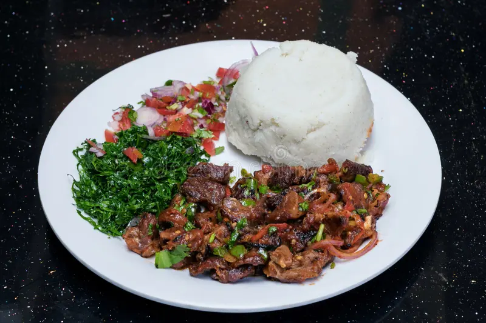

From the coast to the highlands, Kenya is fueled by the flavorful trio of Ugali, Sukuma Wiki, and Nyama Choma. It is strong, smoky, and incredibly satisfying. This famous national dish combines Sukuma Wiki, colorful sautéed collard greens seasoned with onions and tomatoes; Ugali, a firm, dough-like staple of maize meals; and Nyama Choma, Kenya's favorite fire-grilled meat, typically goat or beef, that is perfectly charred. This dish, which is served with a fresh tomato-onion relish known as kachumbari, is more than just a meal; it's a celebration of Kenyan spirit that is enjoyed in family homes, at street grills, and during funerals all over the country. The History of Kenya’s National Dish – Ugali with Sukuma Wiki and Nyama Choma: Few meals capture the heart of a nation like Ugali with Sukuma Wiki and Nyama Choma does for Kenya. This iconic trio—featuring a starchy maize porridge, sautéed leafy greens, and fire-roasted meat—is more than just a meal. It’s a flavorful expression of Kenyan identity, resilience, and community that spans across regions, cultures, and generations. While each component of the dish has its own history, together they represent the culinary soul of the country. Ugali – The Nation’s Staple: At the heart of every Kenyan meal is Ugali, a simple yet vital dish made by stirring maize flour (cornmeal) into boiling water until it thickens into a firm, dough-like consistency. Maize was introduced to East Africa by Portuguese traders in the 16th century, and over time it became the primary staple crop, replacing native grains like millet and sorghum in many areas. Ugali quickly became a dietary cornerstone due to its affordability, ease of preparation, and ability to pair with nearly any side dish. It’s traditionally rolled into small balls by hand and used to scoop up vegetables, sauces, or meat—making it as much a utensil as a food. Sukuma Wiki -The Weekly Lifesaver: Sukuma Wiki, which translates from Kiswahili as “stretch the week,” refers to collard greens or kale, cooked simply with onions, tomatoes, and salt. This dish is so named because of its affordability and reliability—it’s the go-to vegetable for families trying to make meals last until the next market day or payday. Cultivated for generations in smallholder farms across Kenya, sukuma wiki is packed with nutrients and flavor. Its cultural importance lies not only in nourishment but also in its role as a humble, everyday hero of the Kenyan table. Nyama Choma – A Social Flame: Nyama Choma, meaning “roasted meat” in Swahili, is arguably Kenya’s most celebrated delicacy. Typically made from goat or beef, the meat is grilled over open coals and served with a side of salt, sometimes marinated but often unseasoned to preserve its natural flavor. It’s a dish enjoyed slowly—often outdoors—with friends, family, and music. Nyama Choma’s roots trace back to pastoral communities like the Maasai, who have long relied on cattle and goats for sustenance. Today, it’s a national treasure and a key part of festive occasions, from weddings to sports gatherings to roadside weekend feasts. A Dish of Unity: While Kenya is home to over 40 ethnic groups, Ugali with Sukuma Wiki and Nyama Choma is a rare culinary common ground. In both rural villages and Nairobi’s bustling streets, the trio can be found served in homes, roadside eateries (nyama choma joints), upscale restaurants, and school canteens alike. The dish also symbolizes economic and social diversity: Ugali and Sukuma Wiki are everyday staples for many, while Nyama Choma is often reserved for special moments. Together, they reflect the balance of survival and celebration, simplicity and indulgence. More Than a Meal: A Kenyan Way of Life: Ugali with Sukuma Wiki and Nyama Choma is more than Kenya’s unofficial national dish—it’s a reflection of the country’s cultural harmony, historical depth, and shared culinary pride. Whether eaten under a tree in the countryside or in a Nairobi restaurant with a cold Tusker beer on the side, it brings people together around flavors that are as deeply rooted in the land as they are in the heart of every Kenyan.
LEARN MORE